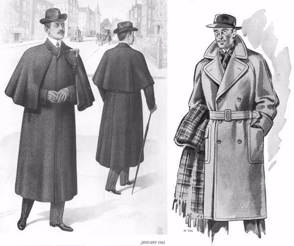
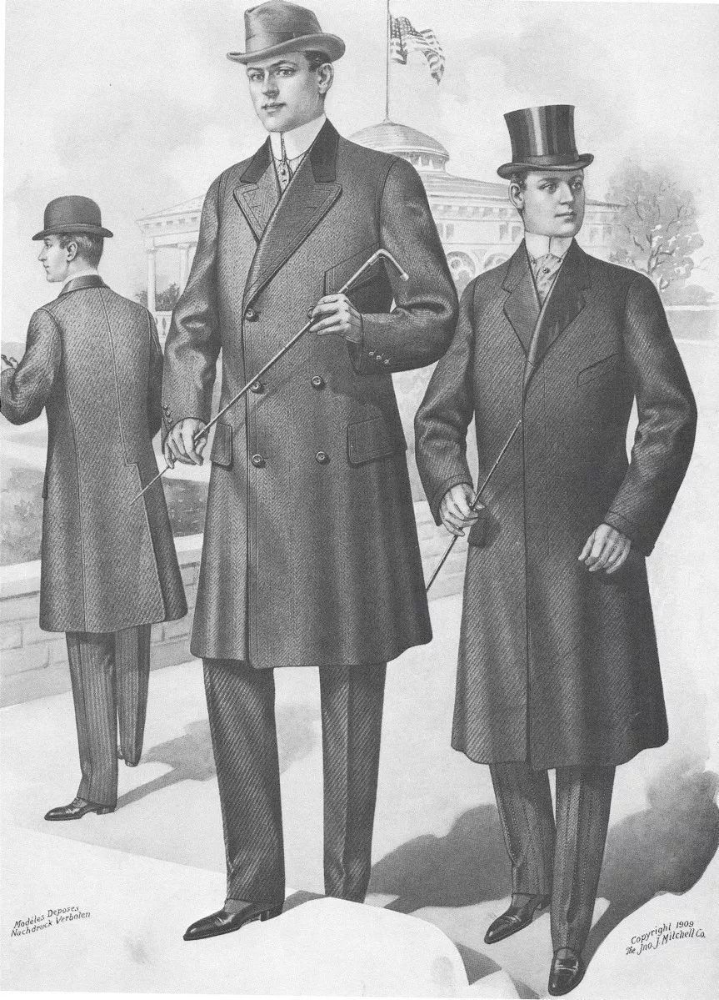
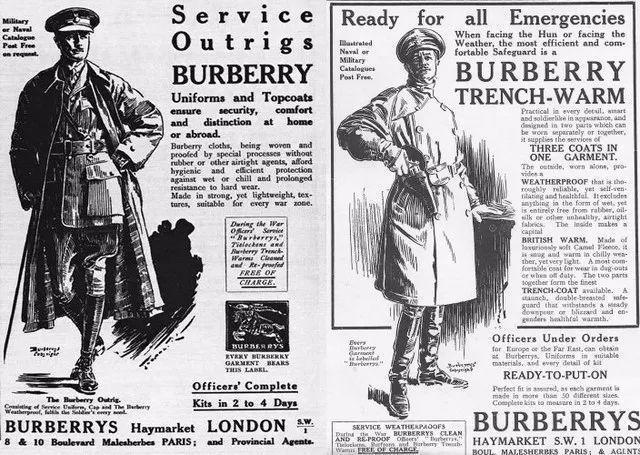

chapter9.1--handout
Background Information
James J. Hill
“If he’d of lived, he’d of been a great man. A man like James J. Hill. He’d of helped build up the country.”（"假使他活下去的话，他会成为一个大人物的，像詹姆斯·J·希尔那样的人，他会帮助建设国家的。" ）
James J. Hill（1838-1916）是一位加拿大裔美国铁路建筑家、金融家（a Canadian-American railroad executive and financier）. 他的传奇之处在于：他通过自筹资金修建了洲际铁路——大北方铁路。在没有任何政府补贴，甚至没有公共土地通行权的情况下，Hill修好了大北方铁路。他本人对此非常自豪。此外，他还花钱为自己的铁路买下了通行权，连印第安土地的通行权都买下来了。
但James J. Hill并不是出身贵族的大亨。他的父亲在他十四岁的时候去世，他因而辍学去杂货店打工，并用每个月四美元的收入来帮助他的寡母和兄弟姐妹。年轻的时候，他在农场、航运、轮船、皮毛贸易和铁路公司工作过。在这样的环境中，他学会了经商之道，存下了资金并最终成为了他自己企业的投资者和管理者。
James J. Hill还被人们称作是The Empire Builder（“帝国建设者”），为了纪念他的贡献，从芝加哥到太平洋西北岸（from Chicago to the Pacific Northwest）有一趟专线列车就叫作Empire Builder.
这里Gatsby的父亲把James J. Hill和自己的儿子相比，可以说是充满了自豪之情的。因为他的儿子也是在贫寒的家庭环境中靠自己的努力发家致富的。
Vocabulary
circumstantial
adj. 间接的，旁证的（based on something that appears to be true but is not proven）
原文：Most of those reports were a nightmare — grotesque, circumstantial, eager, and untrue.
那些报道大多数都是一场噩梦——离奇古怪，捕风捉影，煞有介事，而且不真实。
💧circumstance 作名词表示“客观环境，情形”，因此circumstantial一般指“（证据）间接性的，或是根据环境推测出来的”，强调没有直接确凿的证明，比如：The case against him was largely circumstantial.
对他不利的案情大多为间接推测的。
superfluous
adj. 多余的；过多的；不必要的（more than is needed or wanted）
原文：That request seemed superfluous when I wrote it. I was sure he’d start when he saw the newspapers...
我这样写的时候觉得这个请求似乎是多此一举。我认为他一看见报纸肯定马上就会赶来的……
💧superfluous 由super-和-fluous构成，super-表示over, more; -fluous表示to flow, 连起来就是overflowing (of words or time, etc.) “多余的言辞、时间等”；比如：She gave him a look that made words superfluous.
她看了他一眼，这已表明一切，无须多言了。
Crush Your Problems
1、When Michaelis’s testimony at the inquest / brought to light / Wilson’s suspicions of his wife / I thought / the whole tale would shortly be served up / in racy pasquinade — / but Catherine, / who might have said anything, / didn’t say a word.
等到米切里斯在验尸时的证词透露了威尔逊对他妻子的猜疑以后，我以为整个故事不久就会被添油加醋地写成讽刺文登出来——不料凯瑟琳，她本可以信口开河的，却什么都不说。
💧表达精讲
①brought to light Wilson's suspicions of his wife 也就是brought Wilson's suspicions of his wife to light “透露了威尔逊对他妻子的猜疑”；bring sth to light “使某事为人所知，披露”，也可以用sth作主语，即sth comes to light, 比如：This evidence did not come to light until after the trial. 庭审结束以后这个证据才被披露出来。
②be served up “登上（报纸）”；serve sth up原义指“（为某人）端上食物”，在这里是用了比喻的说法，指整个故事would be served up on the newspaper for the readers.
③in racy pasquinader “添油加醋地写成讽刺文”；racy指“（文章）刺激性的”，并且常涉及性内容；pasquinader则是指“讽刺诗，讽刺文”。
2、From the moment / I telephoned news of the catastrophe / to West Egg village, / every surmise about him, / and every practical question, / was referred to me.
从我打电话到西卵镇报告惨案那一刻起，每一个关于他的揣测、每一个实际的问题，都会向我提出。
💧表达精讲
①news of the catastrophe “惨案的消息”；catastrophe本义指“大灾难，严重的不幸”（a terrible and big disaster）, 在这里的用法和我们昨天讲到的holocaust有异曲同工之妙，都是夸张（hyperbole）的手法；
②surmise 指“推测，臆断”，作动词或名词皆可，相当于guess. 比如：Charles was glad to have his surmise confirmed. 查尔斯很高兴他的推测得到了证实。
③was referred to me “向我提出”；refer sth to sb表示“把某事交给某人解决、处理”，比如：My complaint was referred to the manufacturers. 我的投诉已转给制造商受理。
3、At first I was surprised and confused; / then, / as he lay in his house and didn’t move or breathe or speak, / hour upon hour, / it grew upon me that I was responsible, / because no one else was interested — / interested, I mean, / with that intense personal interest / to which / every one has some vague right at the end.
起初我感到又惊讶又迷惑，后来一个又一个小时过去，他还是躺在他的房子里，不动，不呼吸，也不说话，我才渐渐明白自己负有的责任。因为除我以外没有仟何人有兴趣——我的意思是说，那种每个人身后多少都有权利得到的别人的真切关心。
💧表达精讲
①hour upon hour “一个又一个小时”，upon在这里强调数量累积之多，比如：mile upon mile of golden sand（绵延数英里的金色沙滩）；
②it grew upon me that “我渐渐明白”；sth grows upon/on sb有两种解释，一是“某物逐渐为某人所喜欢”（sth becomes more appreciated by sb）, 另一个则是“某事逐渐为某人所明白”（sth becomes more obvious to sb）, 原文这里理解为第二种；
③that intense personal interest to which every one has some vague right at the end “那种每个人身后多少都有权利得到的别人的真切关心”，还原成正常语序：every one has some vague right at the end to that intense personal interest. vague right “或多或少都有的权利”，vague在这里不是指“含糊的”，而是指“一点，稍微的”（slight）; at the end “在生命尽头”；intense personal interest “（来自别人的）真切关心”，在这里具体指“对一个人的离世表示哀悼、关怀”；
Nick在这里想说的是，一个人在离世后，或多或少都有权利得到别人的哀悼，但没人对Gatsby表示这样的关怀，只有Nick操心所有的后事。
4、When the butler brought back Wolfsheim’s answer / I began to have a feeling of defiance, / of scornful solidarity / between Gatsby and me / against them all.
等到男管家带回来沃尔夫山姆的回信时，我开始感到傲视一切，感到盖茨比和我可以团结一致地横眉冷对他们所有的人。
💧表达精讲
①a feeling of defiance “感到傲视一切”，defiance指“违抗，蔑视”（to refuse to obey someone）, 比如：Her fists clenched in defiance. 她双拳紧握，拒绝服从。
②(a feeling of) scornful solidarity...against them all 直译是“面对他们所有的人有一种嗤之以鼻的团结一致”，但为了符合汉语的习惯，译为“团结一致地横眉冷对他们所有人”更恰当；scornful表示“轻蔑的”，相当于前面defiance的形容词形式defiant; solidarity指“团结一致”，相当于unity.
5、I didn’t want it to be in the papers / and draw a sightseeing crowd, / so I’d been calling up a few people myself. They were hard to find.
我不愿意登报，引来一大堆看热闹的人，所以我就自己打电话通知了几个人。他们可真难找到。
💧表达精讲
①in the papers “登报”；it在这里指“Gatsby的讣告”；
②draw a sightseeing crowd “引来一大堆看热闹的人”；sightseeing本义指“观光，游览”，这里是讽刺的说法。
6、However, / that was my fault, / for he was one of those / who used to sneer most bitterly at Gatsby / on the courage of Gatsby’s liquor, / and I should have known better than / to call him.
不过，这是我的过错，因为他是那些当初喝足了盖茨比的酒就大肆谩骂盖茨比的客人中的一个，我本来就不应该打电话给他的。
💧表达精讲
①to sneer most bitterly at “大肆谩骂”；sneer at指“讥讽，嘲笑”；bitterly指“强烈地，不加收敛地”（intensely）;
②on the courage of “因……有勇气，借……壮胆”；
③should have known better than to do “本应知道不该做……”；know better than表示“（知道）不该做”，比如：You ought to know better than to do such things.（你不该做那种事。）
Content Analysis
Gatsby的意外死亡无疑造成了一场不小的轰动，但大家都不是真正为了Gatsby而惋惜哀悼，只是出于各种利己的目的消费着他的财富和名声——
💧Clue 1: People only intend to take advantages of Gatsby.
Evidence 1: Someone with a positive manner, perhaps a detective, used the expression “madman” as he bent over Wilson’s body that afternoon, and the adventitious authority of his voice set the key for the newspaper reports next morning.
那天下午，有一个神态自信的人，也许是一名侦探，低头检视威尔逊的尸体时用了"疯子"两个字，由于他的语气颇显权威，第二天早上的报纸便以此为基调作了报道。
八卦报刊从来只在乎制造话题和噱头，在文中还有一处体现了Nick对他们的鄙夷和厌恶：...the whole tale would shortly be served up in racy pasquinade（只要Myrtle的妹妹Catherine稍微透露了一些关于姐姐的风流韵事，报刊就会对此大加渲染，写成低俗的文章）。
其实不仅是公众媒体的态度如此，那些曾经在Gatsby的豪华盛宴上放纵享乐的人有更虚伪可鄙的一面。
Evidence 2: After that I felt a certain shame for Gatsby — one gentleman to whom I telephoned implied that he had got what he deserved.
在那以后我为盖茨比感到羞愧——还有一个我打电话去找的人竟然表示他是死有应得的。
当然也还有在Gatsby的派对上喝得烂醉然后对他大肆谩骂的（who used to sneer most bitterly at Gatsby on the courage of Gatsby’s liquor）. 以及曾经在Gatsby家借住的一个房客，在Chapter 5.3中出现过：It was Mr. Klipspringer, the “boarder.” I had seen him wandering hungrily about the beach that morning.
Nick接到他主动打来的电话时，错认为他是表示吊唁并且要参加葬礼的：
Evidence 3: “What I called up about was a pair of shoes I left there. I wonder if it’d be too much trouble to have the butler send them on. You see, they’re tennis shoes, and I’m sort of helpless without them. My address is care of B. F. ——”
"我打电话来是为了我留在那里的一双鞋。不知道能不能麻烦你让男管家给我寄来，你知道，那是双网球鞋，我离了它简直没办法。我的地址是B·F……"
Nick起初非常宽慰（“I was relieved too, for that seemed to promise another friend at Gatsby’s grave.”）但对方支支吾吾了一段后，他才表明自己的真正目的是要拿回落在Gatsby这的一双网球鞋。当然气愤不已的Nick挂断了电话。
在所有人的冷漠和势利之外，唯一意外的温暖来自Gatsby的父亲，他也是除了Nick之外唯一在乎关心Gatsby的人——
💧Clue 2: Gatsby's father is the other one who cares for Gatsby.
Evidence 1: I think it was on the third day that a telegram signed Henry C. Gatz arrived from a town in Minnesota. It said only that the sender was leaving immediately and to postpone the funeral until he came.
我想大概是第三天，从明尼苏达州的一个小城镇来了一封署名亨利·C·盖兹的电报。上面只说发电人马上动身，要求等他到达后再举行葬礼。
Gatsby的父亲在报纸上看到消息后便马上动身了（“I saw it in the Chicago newspaper,” he said. “It was all in the Chicago newspaper. I started right away.”）而且他明显受到了很大的震颤，整个人也几乎处于崩溃边缘（He was on the point of collapse...But he wouldn’t eat, and the glass of milk spilled from his trembling hand）.
还有一个小细节也是令人感觉意外的，当Nick提出要不要把Gatsby的遗体运回西部老家的时候，这位父亲回答道：
Evidence 2: “— Mr. Gatz. I thought you might want to take the body West.” He shook his head. “Jimmy always liked it better down East. He rose up to his position in the East. Were you a friend of my boy’s, Mr. —?”
"盖兹先生，我以为您也许要把遗体运到西部去。" 他摇了摇头。 "杰米一向喜欢待在东部。他是在东部上升到他这个地位的。你是我孩子的朋友吗，先生？"
他并没有对Gatsby离开家感到愤怒，相反地，他非常理解认同，而且他对Gatsby也有一种强烈的自豪感（“If he’d of lived, he’d of been a great man. A man like James J. Hill. He’d of helped build up the country”）.
在明天的内容里，我们也会通过Gatsby父亲的视角看到关于Gatsby的另一面，以及还会有Gatsby的熟识在葬礼上出现。但对于Tom和Daisy的突然消失（I called up Daisy half an hour after we found him, called her instinctively and without hesitation. But she and Tom had gone away early that afternoon, and taken baggage with them）, Nick似乎有意延宕了这个悬念的解决，也没有暗示他们是否会再次出现，作为读者也只好屏息以待了~
Today's Bonus
💧扒一扒大衣都有哪些款式
It was Gatsby’s father, a solemn old man, very helpless and dismayed, bundled up in a long cheap ulster against the warm September day.（来的是盖茨比的父亲，一个很庄重的老头子，非常可怜，非常沮丧，这样暖和的九月天就裹上了一件蹩脚的长外套。）
Gatsby的父亲今天一登场就穿了一件叫作ulster样式的廉价大衣，在Nick看来，天气这么暖和的九月就穿上大衣实在是很蹩脚笨拙。那么ulster究竟是什么样的呢？今天的彩蛋我们就来扒一扒大衣的各种款式~
1、Ulster Coat
阿尔斯特宽大衣
阿尔斯特宽大衣最开始是维多利亚时期人们白天工作时穿的大衣，有袖子也有披风（a Victorian working daytime overcoat, with a cape and sleeves）, 因此都用耐磨的粗纤维像常见的人字呢和粗花呢等制成。
最原始的Ulster Coat是如左图中那样有可拆斗篷披肩、隐藏式单排扣，后来便演变成右图这般，腰带（可有可无）、六颗双排扣、袖口拼接，最标志性的非这个大大的领口莫属，又被统称为 Ulster collar.

2、Chesterfield Coat 查彻斯特大衣
这款大衣算是大家最常买、最常见、最经典的了。它最早出现在19世纪中期，名字是由英国Chesterfield庄园的第六任伯爵George Stanhope所命名，在维多利亚时代末期开始流行。而虽然设计上是男士款式，但在19世纪便在女性当中流行开来了。
Chesterfield Coat一般是及膝长（knee-length）, 剪裁和西装相近，还有天鹅绒的领子（velvet collar）.

3、Trench Coat 战壕大衣
这款大衣一般被称作风衣或是Burberry Coat, 但其实它的专业名字是Trench Coat, 而且和Chesterfield Coat一样，背后也有一段故事。
这是Burberry本人为第一次世界大战所设计的军官雨衣，所以Trench Coat这个名字实际取自Trench Warfare（trench指“战壕”，一种作战的辅助工具，交战方处于对峙时，掘土成壕，可以防止从正面袭击过来的子弹和炮弹）。

从它的机能性和细节上就可以看出是为了备战而设计的。比如它除了能够防风防水，还有为了军阶考虑而设计的肩带。并且考虑到用枪的频繁，右肩上多了一层补强以抵挡枪托；而背部标志性的翻盖设计则是为了挡雨。
腰部配有和大衣材料一致的腰带，据说这是因为减少扣带的麻烦，可以直接绑着。同样在袖口会有束带防止雨水渗入，腰部前后都配有D环以便悬挂手枪背带或手榴弹等。
4、Polo Coat 马球大衣
这件大衣可谓是国家领导人们最爱穿的大衣之一。Polo即马球，这款大衣的由来完全是因为五十年代英国的著名马球手Tommy Hitchcock在梅道布鲁克跑马场候场时身上穿的保暖大衣。虽然Polo Coat起源于英国，但当时却在美国流行开来。
面料上最开始是只用驼绒（camel hair）, 后来则主要采用驼绒和羊毛混织而成（blended with wool）. 所以Camel Coat和Polo Coat其实都是指同一种大衣款式。
5、Crombie Coat 克龙比式大衣
传统上讲，Crombie Coat外套指的就是是英国品牌Crombie的外套，随着时间的推移，这个名字已经包含了基本上所有类似于这种四分之三长度外套设计的衣服。
这款大衣既适用于晚宴，也可以作为平时的休闲外套。它起源于19世纪末，在常年阴雨绵绵的英国，这种质感厚重的由羊毛材质制作而成大衣自然成为英国绅士们保暖造型的一大帮手了。